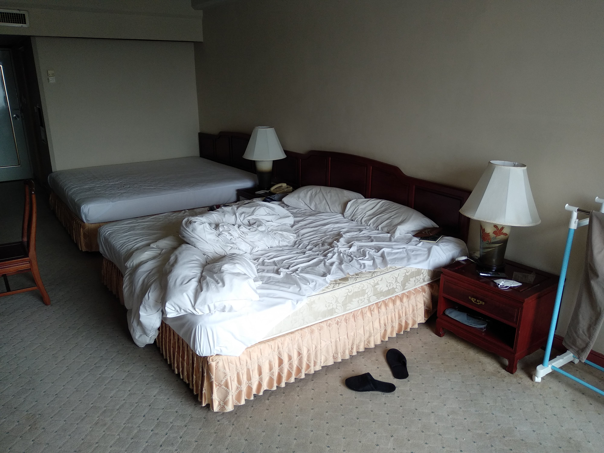
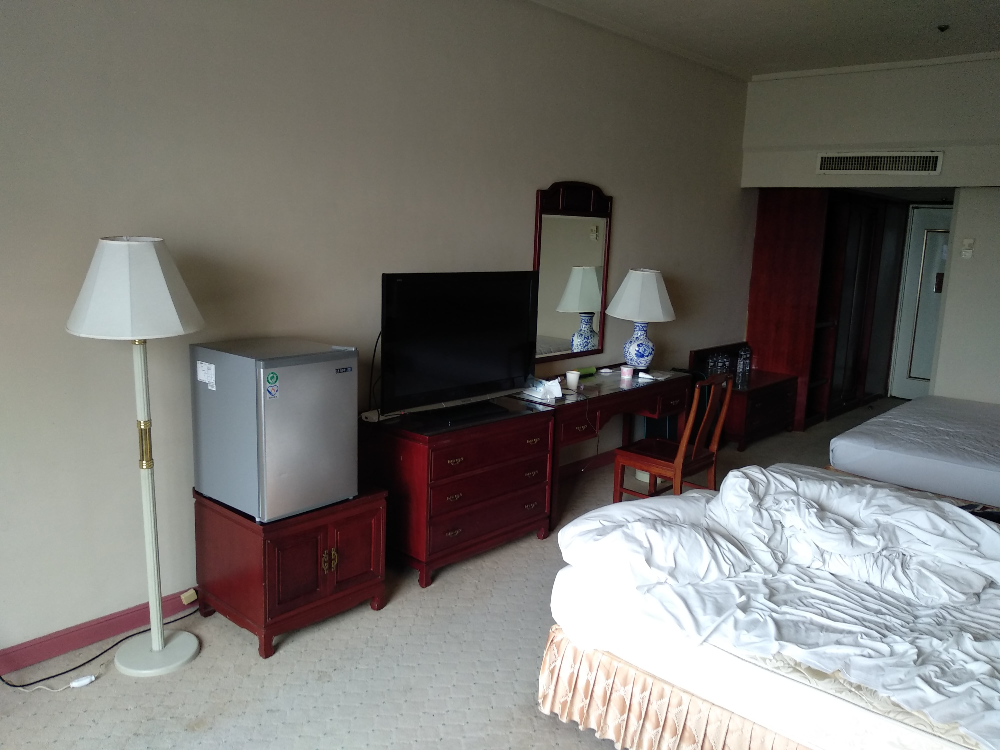
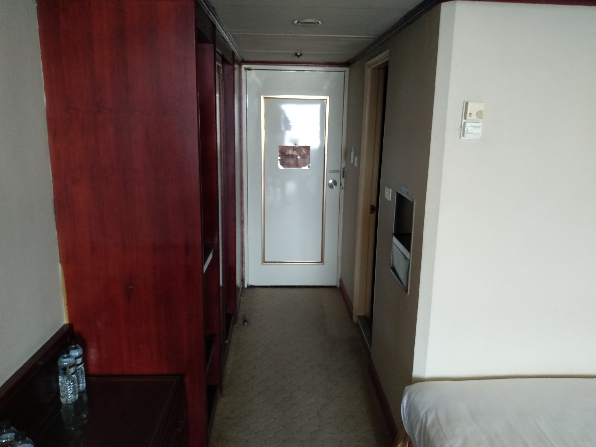
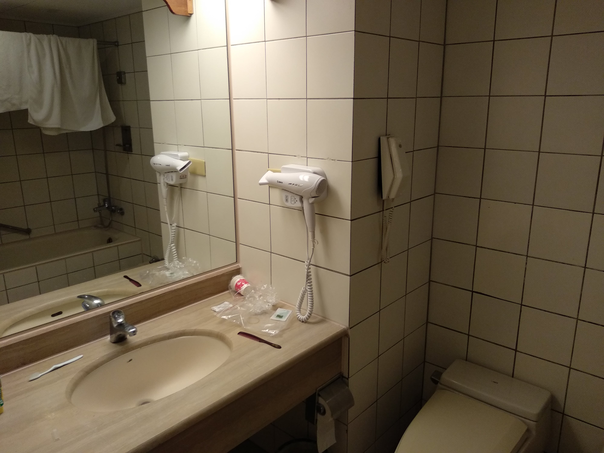
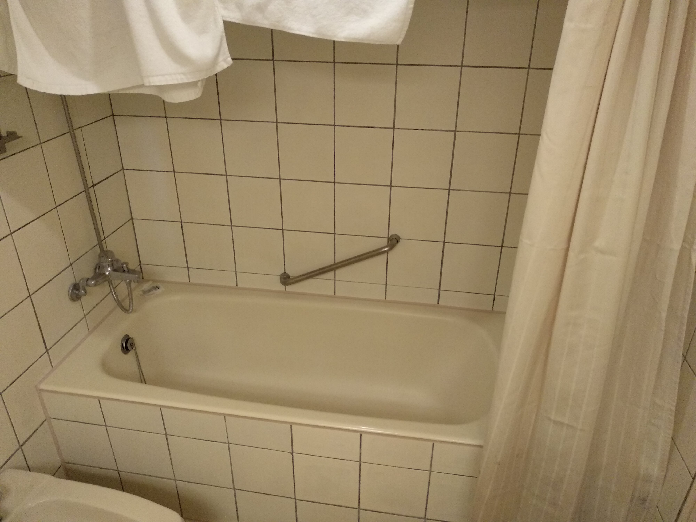
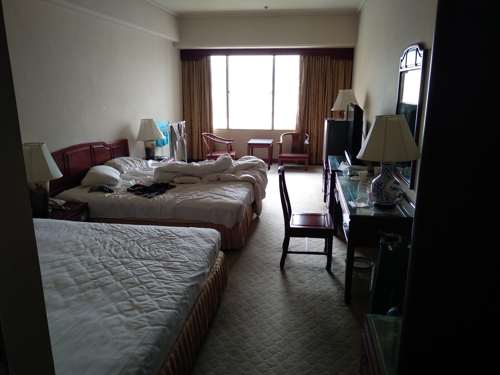
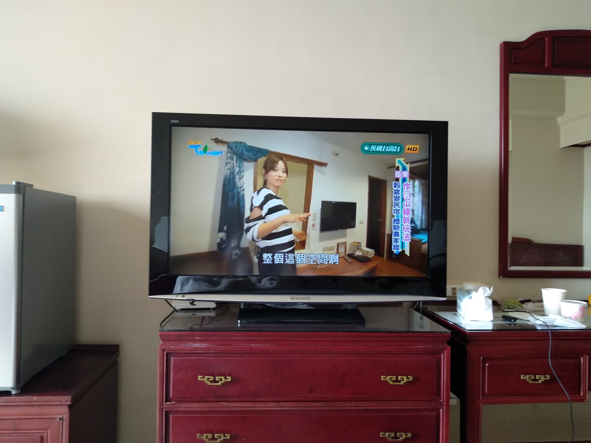

Kufry sbaleny. 25. srpna 2022 jsem nasedl na letadlo na letišti ve Vídni směr Istanbul. Odtud jsem přestupoval na letadlo rovnou do Tchaj-wanu, mého současného azylu. Avšak, již na onom tureckém letišti nešlo vyřizování moc hladce. Kontrolor u přepážky po mně chtěl dokument, který jsem vůbec nepotřeboval, ale přitom mi připomněl, že bez tohoto dokumentu neodletím. Situace to jistě příjemná nebyla a vůbec ji nezlehčoval ani fakt, že letadlo, kterým jsem letěl, mělo zpoždění skoro hodinu.
Po dlouhých jedenácti hodinách v letadle jsem konečně dorazil na ostrov připomínající tabákový list. Tchaj-wan, doslova terasová zátoka. Dříve také známý pod jménem Formossa.
Na tchajpejském letišti jsem si prošel registračním karantenním procesem, nastoupil do karantenního taxíku a jel do Taichungu, města v němž sídlí Univerzita Tunghai.
Asi největší kulturní šok jsem zažil právě při jízdě taxíkem. Mini náklaďáky značky ISUZU s růžovými neony, dětská obsluha u pumpy nebo sám pan řidič a jeho dva telefony a jeden tablet s držáky připevněnými k palubní desce.
Jeden takový zásadní poznatek je, že se zde toaletní papír nesplachuje. V pátek pro mne přijede autobus a tudíž bych měl být už v 8:30 (2:30 našeho času) před hotelem.
Nicméně, nyní si musím odsedět svůj týden v karanténě na hotelu. Foto přidávám níže:
      